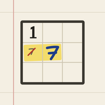

Sudoku WorkbookSudoku Workbook: Help
Sudoku Workbook teaches you the twelve Sudoku solving techniques with lessons, drills and exams. Free, no ads, no account and fully offline.
Get help
Write to support@nbsystems.dev. Include the app version (Settings › About), your iOS version and what you did. A screenshot helps. There is no guaranteed response time.
Frequently asked questions
- How do I learn? The workbook shows the card you are on. Every card has a lesson, five drills and an exam. You can open any card at any time, including later ones.
- What is the margin note? It explains the next logical step and highlights the cells involved. You enter the digit yourself.
- When is an exam passed? When you solve the puzzle with at most two margin notes. The card then lies face up in your card box.
- What does the solving path show? After every puzzle, a tally of the techniques your entries needed, where you got stuck and which card fits next.
- Free puzzles and daily challenges: Five kinds of puzzle, named after the techniques they need. Each day has one fixed puzzle, the same for everyone.
- New iPhone: Progress, puzzles and statistics are stored only on the device. They move with you when you set up the new iPhone from an iCloud or computer backup.
- Does it cost anything? No. No ads, no in-app purchases, no subscription.